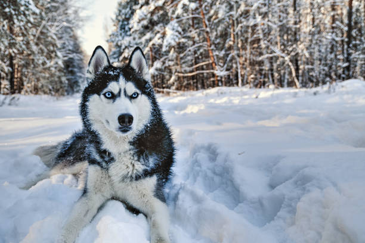

Say Hi to Bacon

- Age: 9 years old (56 years young!)
- Breed: Labradoodle
- Favorite Food: Anything that falls on the floor
- Favorite Toy: Squeaky toys
- Favorite Travel Destination: Venice Beach, CA
All About Bacon
Bacon prefers to spend his days lounging among the three different beds/couches that his family has gifted him. He enjoys a walk or two around the neighborhood, as long as he can pretend that he doesn't see any of the other animals to avoid the embarrassment of not wanting to admit he has no wolf-like skills in chasing them.
Fun Facts About Bacon
- At night just as the rest of the family is ready to relax, Bacon suddenly wants to release all of his energy
- He will place his toys on a mini couch and frantically drag the couch around, giving his toys "a ride."
- There is also a lot of rolling. Lots and lots of rolling.
- He likes anyone who gives belly rubs
- He will beat you in a game of tug-of-war
- He will sneak onto the couch no matter how many times you say no
Photo Gallery


Say Hi to Daisy

- Age: 1 year old (parenting a teenager is hard!)
- Breed: Golden Retriever but, she identifies as a poodle
- Favorite Food: The farmers dog (health is the newest trend)
- Favorite Toy: The mirror
- Favorite Travel Destination: The Doggy Spa
All About Daisy
Daisy is a sweet and energetic dog. She loves to play sports but, also enjoys relaxing especially if it includes a spa. She is protective and loves to be around people. Be careful though, she is a flirt.
Fun Facts About Daisy
- Loves chasings tennis balls
- Stares at he mirror for hours
- Loves long walks especially if we walk by the neigbhors house. (She has a crush on duke, no he is not a dog)
- Loves swimming in the pool
- She loves people and gets grumpy if left without a lap too long
Photo Gallery


Say Hi to Luna

- Age: 6 year old (going through a mid-dog crisis)
- Breed: Siberian Husky
- Favorite Food: Snow
- Favorite Toy: Snow Sleds
- Favorite Travel Destination: Boulder, Colorado
All About Luna
Luna is a spirited and lovable husky from Alaska, with a heart as big as her appetite. She loves to play in the snow and watch the moon. She is a mother of 4 pups: eclipse, snow white, Apollo, and winter.
Fun Facts About Luna
- Loves playing hide and seek
- Howling at the moon
- Cuddling with her puppies
- Running and digging holes in the snow
- She loves taking naps on the balcony
Photo Gallery
